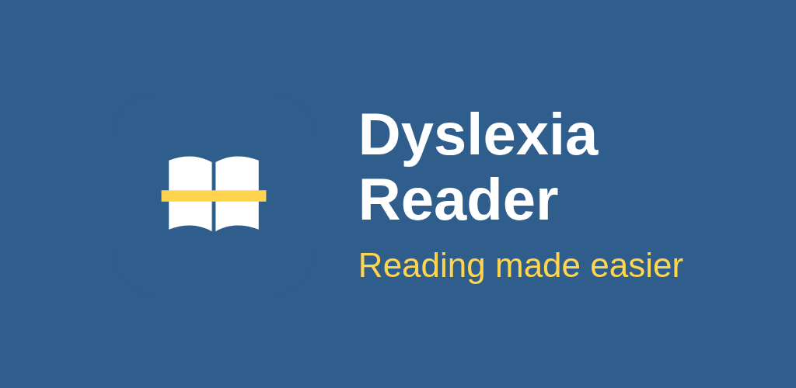
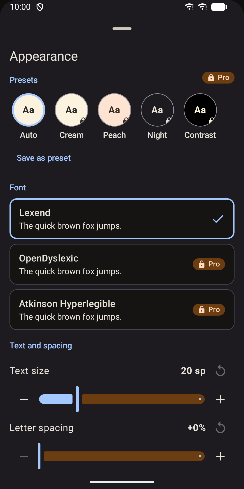
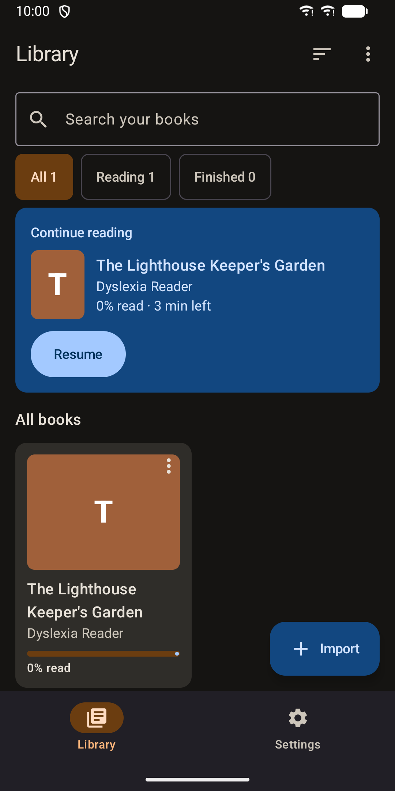
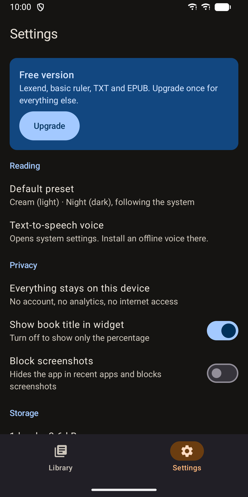

Dyslexia Reader: Bücher lesen
Bücher lesen mit legasthenie-freundlichen Schriften, Lesezeile und Vorlesefunkti







Über die App
Dyslexia Reader ist ein Leseprogramm für Menschen mit Legasthenie. Importiere deine eigenen Bücher und stelle den Text so ein, dass er für deine Augen angenehm ist. LESEHILFEN - Lesezeile: blendet die Zeilen um die aktuelle Zeile ab, damit du nicht den Faden verlierst. - Legasthenie-freundliche Schriften: Lexend, OpenDyslexic und Atkinson Hyperlegible. - Regler für Buchstaben-, Wort- und Zeilenabstand sowie die Textgröße. - Lese-Profile für Hintergrundfarbe, Textfarbe, Schrift und Abstände. - Vorlesen mit der Stimme, die auf deinem Gerät installiert ist. Der aktuelle Satz wird hervorgehoben, die Geschwindigkeit ist einstellbar. Das Vorlesen läuft auch bei ausgeschaltetem Bildschirm weiter. - Heller und dunkler Modus folgen der Systemeinstellung. DEINE BÜCHER - Importiere TXT-, EPUB- und PDF-Dateien von deinem Gerät. - Teile reinen Text aus einer anderen App, um ihn deiner Bibliothek hinzuzufügen. - PDF-Dateien werden in Text umgewandelt, damit deine Schrift und deine Abstände gelten. Bilder und Seitenlayout bleiben nicht erhalten. Gescannte PDFs ohne Text werden nicht unterstützt. - Ein kurzes Beispielbuch ist enthalten, damit du alle Funktionen ausprobieren kannst, bevor du eigene Bücher hinzufügst. - Die Bibliothek zeigt Fortschritt und verbleibende Lesezeit jedes Buchs. Ein Widget für den Startbildschirm zeigt deinen Lesefortschritt und bringt dich zurück zu deiner Stelle. BARRIEREARM - Große Bedienflächen und Beschriftungen für Screenreader. - Für Smartphones und Tablets. DATENSCHUTZ - Kein Konto nötig. - Deine Bücher und Einstellungen bleiben auf deinem Gerät. Die App hat keine Internetberechtigung, keine Werbung und keine Analyse. - In den Einstellungen kannst du einzelne Bücher oder alle App-Daten jederzeit löschen. - Eine Option in den Einstellungen blockiert Screenshots. KOSTENLOSE UND BEZAHLTE FUNKTIONEN Kostenlos: Import von TXT und EPUB, geteilter Text, die Schrift Lexend, die einfache Lesezeile, Abstandsregler und das Widget. Mit einem Kauf über Google Play freischaltbar: alle Schriften, Vorlesen mit Satzhervorhebung, Lese-Profile, eine anpassbare Lesezeile (Höhe, Abdunklung und Farbton) und PDF-Import. Der Kauf erfolgt einmalig, braucht kein Konto und lässt sich mit demselben Google-Konto wiederherstellen. Die Schriften stehen unter der SIL Open Font License. Die Lizenzdetails findest du in den Einstellungen. Fragen oder Feedback: apps@schimpf.es